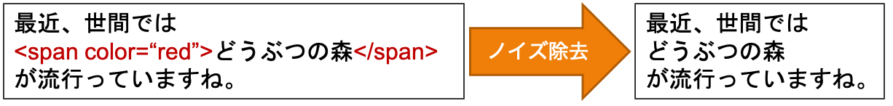

テキストの前処理¶
自然言語処理に前処理は不可欠です．実世界のテキストはたくさんのノイズが含まれているので，そのままでは機械で処理するのは難しいです．特にインターネットで得られるテキストデータはHTMLタグやJavaScriptのコードといったノイズが含まれています．テキスト分類を行う前に，このようなノイズを取り除き，機械で扱えるような形に加工していきましょう．
以下のリンクでソースコードを試すことができます．
テキストのクリーニング¶
テキストのクリーニングでは，テキスト中に含まれるノイズを除去します．除去されるノイズとして，HTMLタグやJavaScriptのコードが挙げられます．以下のようなイメージでテキストをクリーニングしていきます．
PythonでHTMLタグを除去するにはBeautiful Soupやlxmlのようなパッケージが便利です．以下ではBeautiful Soupを使って実際にHTMLタグを除去してみましょう．
# 簡単なHTML文書の例
html = """
<html>
<body>
これは<a href="http://example.com">Example</a>です。
</body>
</html>
"""
print(html)
<html>
<body>
これは<a href="http://example.com">Example</a>です。
</body>
</html>
上記のHTML文書をクリーニングしていきます．
from bs4 import BeautifulSoup # bs4からBeautifulSoupをインポートします
def clean_html(html, strip=True): # strip=Trueの時，改行を除去します
soup = BeautifulSoup(html, "html.parser") # BeautifulSoupのオブジェクトを生成します
text = soup.get_text(strip=strip) # soupオブジェクトのget_textを実行します
return text
text_cleaned = clean_html(html)
print(text_cleaned)
これはExampleです。
HTMLタグが除去されてきれいになりました．
単語分割¶
自然言語処理をする際によく行われる処理として， テキストを単語に分割する処理 があります．テキストを単語に分割する理由は，多くの自然言語処理システムでは 入力を単語レベルで扱う からです．日本語では主に 形態素解析器 を用いて単語の分割を行います．
イメージとしては以下のように分割します．
このようにテキストを形態素ごとに分割する作業を 分かち書き と言います．自然言語処理では一般的に分かち書きをし，分割された形態素を扱っていきます．
ところで上の例では「どうぶつの森」が「どうぶつ」・「の」・「森」に分割されてしまっています．このようにデフォルトの形態素解析では固有名詞や新語を正しく分かち書きできないと言う欠点があります．この問題は，形態素解析器に辞書を使うことである程度解決することができます．辞書は自分で作成できますが，配布されているものを使用すると良いでしょう．以下の例は辞書として NEologd を使って分かち書きをした結果です．
「どうぶつの森」が一つの名詞として認識されていますね．
では，分かち書きをPythonで行ってみましょう．形態素解析器は様々なものがありますが，ここでは最も一般的な MeCab を使ってみましょう．
import MeCab
text = "最近、世間ではどうぶつの森が流行っていますね。"
mecab_tagger = MeCab.Tagger()
text_tokenized = mecab_tagger.parse(text) # 形態素解析をする
print(text_tokenized)
最近 名詞,副詞可能,*,*,*,*,最近,サイキン,サイキン
、 記号,読点,*,*,*,*,、,、,、
世間 名詞,一般,*,*,*,*,世間,セケン,セケン
で 助詞,格助詞,一般,*,*,*,で,デ,デ
は 助詞,係助詞,*,*,*,*,は,ハ,ワ
どう 副詞,助詞類接続,*,*,*,*,どう,ドウ,ドー
ぶつ 名詞,一般,*,*,*,*,ぶつ,ブツ,ブツ
の 助詞,連体化,*,*,*,*,の,ノ,ノ
森 名詞,一般,*,*,*,*,森,モリ,モリ
が 助詞,格助詞,一般,*,*,*,が,ガ,ガ
流行っ 動詞,自立,*,*,五段・ラ行,連用タ接続,流行る,ハヤッ,ハヤッ
て 助詞,接続助詞,*,*,*,*,て,テ,テ
い 動詞,非自立,*,*,一段,連用形,いる,イ,イ
ます 助動詞,*,*,*,特殊・マス,基本形,ます,マス,マス
ね 助詞,終助詞,*,*,*,*,ね,ネ,ネ
。 記号,句点,*,*,*,*,。,。,。
EOS
上の例ではテキストを単語に分割しただけでなく，品詞などの情報も得られました．多くの場合では分かち書きさえできれば十分です．分かち書きをするためには MeCab.Tagger() にオプションとして "-Owakati" 入れてください．
mecab_tagger = MeCab.Tagger("-Owakati") # 分かち書きをする
text_tokenized = mecab_tagger.parse(text)
text_tokenized = text_tokenized.strip().split() # スペースで区切ったリストに変換
print(text_tokenized)
['最近', '、', '世間', 'で', 'は', 'どう', 'ぶつ', 'の', '森', 'が', '流行っ', 'て', 'い', 'ます', 'ね', '。']
分かち書きをすることができました．しかし，「どうぶつの森」が正しく分かち書きできていません．（「どうぶつ」すら「どう」「ぶつ」になってしまっています．）正しく分かち書きをするためにNEologdの辞書を追加しましょう．追加するには MeCab.Tagger() のオプションに（今回の環境の場合は） "-d /usr/lib/x86_64-linux-gnu/mecab/dic/mecab-ipadic-neologd" を追加しましょう．
mecab_tagger = MeCab.Tagger(
"-Owakati -d /usr/lib/x86_64-linux-gnu/mecab/dic/mecab-ipadic-neologd") # 辞書を追加する
text_tokenized = mecab_tagger.parse(text)
text_tokenized = text_tokenized.strip().split()
print(text_tokenized)
['最近', '、', '世間', 'で', 'は', 'どうぶつの森', 'が', '流行っ', 'て', 'い', 'ます', 'ね', '。']
固有名詞も正しく分かち書きすることができました．試しに他の文章も分かち書きしてみてください．NEologdは頻繁に更新されているので，ほとんどの固有名詞を正しく分かち書きできるはずです．
注釈
実は，このような日本語文法の形態素解析を利用した分かち書きは，最近の機械学習の分野であまり使われていません．それは「日本語の文法の分割方法が，システムとって必ずしも適切とは限らない」という理由からです．
例えば，「おはようございます」という文章を考えてみましょう．辞書にもよりますがデフォルトのMeCabでは「おはよう / ござい / ます」というふうに分割されるはずです．ですが，「おはようございます」のような一般的な単語をわざわざ3つの形態素に分解する必要はあるでしょうか？そもそも「ござい」という単語は「〜ございます」という文脈以外では滅多に使われません．であるならば「おはようございます」という単語は，そのまま1語として扱うか「おはよう / ございます」のように分割することが合理的でしょう．
このような問題に対して，システムによって適切な分割方法を自動的に学習する手法として SentencePiece があります．興味がある方は是非調べてみてください．
ストップワードの除去¶
ストップワードというのは自然言語処理をする際に，一般的で役に立たないなどの理由で 処理対象外 とする単語のことです．例えば，助詞や助動詞などの機能語（「は」「の」「です」「ます」など）が挙げられます．これらの単語は出現頻度が高い割に役に立たず，計算量や性能に悪影響を及ぼすため前処理で除去しておきます．
ストップワードの除去には様々な方式がありますが，ここでは以下の2つの方式を紹介します．
辞書による方式
出現頻度による方式
辞書による方式¶
辞書による方式では，あらかじめストップワードを定義しておき，所内に含まれる単語をテキストから除去します．自分で作成してもいいですが，すでに定義済みの辞書が存在します．ここでは日本語のストップワード辞書の一つであるSlothlibの中身を見てみましょう．
import urllib
slothlib_path = 'http://svn.sourceforge.jp/svnroot/slothlib/CSharp/Version1/SlothLib/NLP/Filter/StopWord/word/Japanese.txt'
slothlib_file = urllib.request.urlopen(slothlib_path) # URLを開く
slothlib_stopwords = [line.decode("utf-8").strip() for line in slothlib_file] # ストップワードをリストに格納
slothlib_stopwords = [ss for ss in slothlib_stopwords if not ss==u''] # 空行を削除
print("単語数:", len(slothlib_stopwords))
for ss in slothlib_stopwords:
print(ss)
単語数: 310
あそこ
あたり
あちら
あっち
あと
あな
あなた
あれ
いくつ
いつ
...
このストップワードリストを使って，実際のテキストからストップワードを除去してみましょう．
slothlib_stopwords = set(slothlib_stopwords) # listをsetに変換（こちらの方が動作が早い）
text = "この前どうぶつの森を買いに行きました。"
text_tokenized = mecab_tagger.parse(text)
text_tokenized = text_tokenized.strip().split()
def remove_stopwords(words, stop_words):
words = [w for w in words if w not in stop_words]
return words
print("除去前:", text_tokenized)
text_filtered = remove_stopwords(text_tokenized, slothlib_stopwords)
print("除去後:", text_filtered)
除去前: ['つい', 'この', '前', 'どうぶつの森', 'を', '買い', 'に', '行き', 'まし', 'た', '。']
除去後: ['つい', 'この', 'どうぶつの森', 'を', '買い', 'に', '行き', 'た', '。']
ストップワードが除去されていることが確認できますね．
注釈
辞書によるストップワードの除去が，必ずしも私たちの目的に対して良い影響を及ぼすとは限らないことに注意してください．例えば，Slothlibのストップワードの辞書には「楽」「喜」「怒」「哀」が含まれています．これらが必ずしも不要な語であるかは議論の余地がありそうです．
{kind=link}
単語の正規化¶
単語の正規化では，単語の文字種の統一，綴りや表記揺れの吸収といった， 単語を置き換える処理 をします．この処理を行うことで，全角の「ネコ」と半角の「ﾈｺ」を同じ単語として処理できるようになります．
単語の正規化には様々な処理がありますが，この記事では以下の2つの処理を紹介します．
文字種の統一
数字の置き換え
文字種の統一¶
文字種の統一ではアルファベットの大文字を小文字に変換する，半角文字を全角文字に変換すrといった処理を行います．ここでは 小文字化 の処理を行ってみましょう．
text = "President Obama is speaking at the White House."
text = text.lower()
print(text)
president obama is speaking at the white house.
全ての文字が小文字に統一されました．
数字の置き換え¶
数字の置き換えでは，テキスト中に出現する筋を別の記号（例えば0）に置き換えます．例えば「2020年1月1日」という文字列は「0年0月0日」となります．
数字の置き換えを行う理由は，数値表現が多様で出現頻度が高い割には自然言語処理のタスクに役に立たないことが多いからです．例えば，ニュース記事を「スポーツ」や「政治」のようなカテゴリに分類するタスクを考えましょう．この時，記事中には多様な数字表現が出現するでしょうが，カテゴリの分類にはほとんど役に立たないと考えられます．
Pythonでの実装は正規表現モジュールを使うことでできます． re.sub 関数を使って数値を置き換えます．
import re
def normalize_number(text):
replaced_text = re.sub(r"\d+", "0", text) # \d+は1つ以上の連続した数値を表します．
return replaced_text
text = "2万0689・24ドル"
text = normalize_number(text)
print(text)
0万0・0ドル
数字が全て0に置き換わりました．
注釈
テキストの前処理は以上で紹介したものの他にもたくさんの種類があり，タスクによって最適なものが違います．その他の前処理は以下のサイト等を参考にしてください．